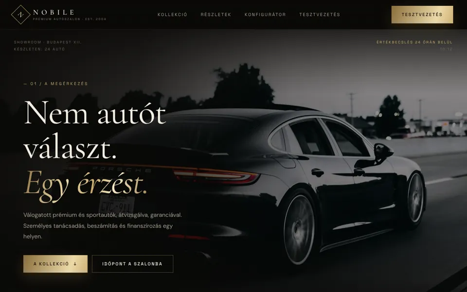

ÚJ / PREMIUM & CINEMATIC
NOBILE .
Prémium autószalon fekete–pezsgőarany arculattal: a fénysáv görgetésre végigsöpör az autón, a kollekcióban 3D térben repülünk át a lebegő paneleken, amelyek elhaladáskor aranyporrá esnek szét. Konfigurátor, finanszírozási kalkulátor és tesztvezetés-foglalás.
Demó megnyitása ↗